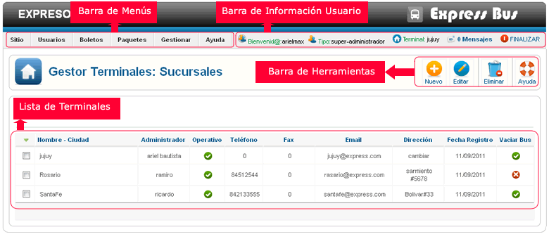
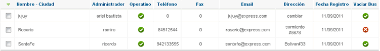

Ayuda Gestor de Terminales
Contenido:
Vista General
Barra de Menús

La barra de menús nos permite tener un acceso direccto un sector del sistema, permite una mejor navegación por el sistema.
La barra de menús varia en base al tipo de usuario logeado (niveles), si ingresa el super admin tendra mayores opciones en la barra de menús, adiferencia de un usuario de nivel bajo solo vera la barra de menús relacionado con el cargo que este ocupa.
Barra de Información Usuario

La barra de información usuario nos muestra la información del usuario Logeado, también nos permite tener acceso directo a mensajesprovenientes de otros usuarios del sistema, podemos finalizar la aplicación de forma segura haciendo clic en Finalizar.
Barra de Herramientas
Esta el la barra de herramientas del gestor de terminales, cada botón nos permite ejecutar una acción en concreto, a continuación explicamos el funcionamiento de cada botón.
 Nuevo
Nuevo
Este botón nos permite agregar una nueva terminal al sistema. al hacer clic en este botón se abrira una ventana con un formulario en la cual tendremos que llenar con los datos de la terminal y a continuacion guardar.
 Editar
Editar
Este botón nos permite editar la información de una terminal. para utilizar esta opción primero seleccionamos la terminal de la lista.
Se abrira una ventana con los datos de la terminal y ahí mismo podremos actualizar con los nuevos datos, por último guardamos los cambios.
 Eliminar
Eliminar
Este botón nos permite eliminar de forma permanete una terminal seleccionada, utilize esta opción a menos que este realmente seguro de eliminar la terminal.
Lista de Terminales
Esta lista nos muestra todas las Terminales o sucursales registradas en el sistema. asi mismo nos muestra información necesaria de las terminales, uno de los puntos importantes de esta lista el ver que terminales estan autorizadas para vaciar los buses, indicando con su icono de de estado indica que esta autorizado, indica que no esta autorizado.Este valor puede ser coambiado al editar la terminal es recomendable que solo las terminales de origen y destino final tengan este permizo.